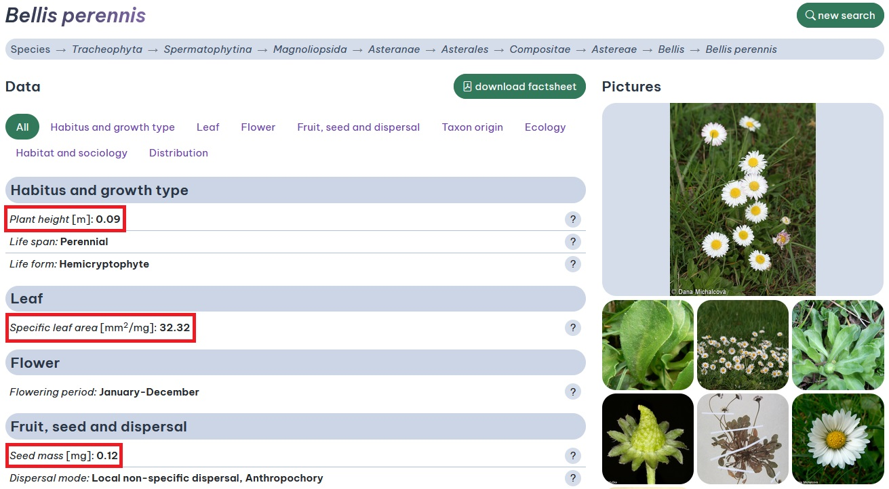

Obtain functional traits for European plants
FloraVeg.EU is a great source to obtain data for the European vegetation, including habitat information and species traits. Some of these information are fully available at the download section. The data on FloraVeg.EU also contains some information on three main functional traits of the ‘leaf-height-seed’ (LHS) scheme proposed in the famous paper by Westoby (1998), namely specific leaf area (SLA), plant height and seed mass.

These data are however not (yet!) available in the download section.
The best solution to get such trait data is to get in touch with my former group members in Brno (Czech Republic) (see contacts here). Of course databases like TRY and LEDA are also great option, but requires some times to access the data and process them.
Sometimes one just need traits for a few single species for a quick analysis - (or to make comparisons / check outliers of LHS traits with other databases). In such cases one can easily use R to quickly access such information using the rvest R package (Wickham, 2022). This works pretty good if your plant names already follows the nomenclature from Euro+Med!
N.B.: Please, cite the FloraVeg.EU when using the data obtained this way. See ‘Data source and citation’ below
Here is the get.LHS.FloraVegEU function:
get.LHS.FloraVegEU <- function(species) {
require(rvest)
url <- paste0('https://floraveg.eu/taxon/overview/',species)
webpage <- read_html(URLencode(url))
#1. Get plant height
str_plant.height <- '#panel_2 .featureDetail:nth-child(1) b'
plant.height_html <- html_nodes(webpage, str_plant.height)
plant.height <- html_text(plant.height_html)
plant.height <- gsub('[^0-9.-]', '', plant.height)
if(identical(plant.height, character(0))) {plant.height=NA} else {
if(plant.height=='' | plant.height=='-') {plant.height=NA} else {
plant.height <- as.numeric(plant.height)
}
}
#2. get specific leaf area
str_SLA <- '#panel_3 .align-items-center div'
SLA_html <- html_nodes(webpage, str_SLA)
SLA <- html_text(SLA_html)
if(identical(SLA, character(0))){
SLA <- NA
} else {
for (k in 1:length(SLA)) {
i2 <- gsub('mm2', '', SLA[[k]])
SLA[[k]] <- gsub('[^0-9.-]', '', i2)
}
SLA <- suppressWarnings(as.numeric(SLA[!is.na(as.numeric(SLA))]))
if (identical(SLA, numeric(0))){
SLA <- NA
}
}
#3. get seed mass
str_SM <- '#panel_5 b'
SM_html <- html_nodes(webpage, str_SM)
SM <- html_text(SM_html)
SM <- gsub('[^0-9.-]', '', SM)
SM <- ifelse(identical(SM, character(0)), NA, SM)
SM <- as.numeric(SM)
res <- data.frame(
plant_height = plant.height,
sla = SLA,
seed_mass = SM)
return(res)
}To use the function just type the name of a single species present in the FloraVeg.EU checklist to obtain the results. For example:
> get.LHS.FloraVegEU('Bellis perennis')
plant_height sla seed_mass
1 0.09 32.32 0.12Note that species nomencalure must correspond the one in FloraVeg.EU. Mispelled species or species for which data are not available will return either an error or NA values. To work with several species and avoid this issue, one can easily apply a modified version of this function using the ‘possibly’ function of the purrr R package (Wickham, 2023).
#An example of species list (vector):
splis = c('Bellis perennis', #Existing species with full LHS information
'Pinus mugo', #Existing species with incomplete LHS information
'Pseudobetckea caucasica', #Existing species with no information
'Taraxacum midolii' #Mispelled / unexisting species
)
library(purrr)
get.LHS.FloraVegEU_possibly <- possibly(get.LHS.FloraVegEU,
data.frame(plant_height = NA, sla = NA, seed_mass = NA))
res <- map(splis, get.LHS.FloraVegEU_possibly) #map the function
names(res) <- splis #set species names
res.df <- do.call(rbind, res) # bind datasetThe code returns:
> res.df
plant_height sla seed_mass
Bellis perennis 0.09 32.32 0.12
Pinus mugo 3.12 NA 6.08
Pseudobetckea caucasica NA NA NA
Taraxacum midolii NA NA NAReferences:
FloraVeg.EU – Database of European Vegetation, Habitats and Flora. www.floraveg.eu
Westoby, M. (1998). A leaf-height-seed (LHS) plant ecology strategy scheme. Plant and soil, 199, 213-227. https://doi.org/10.1023/A:1004327224729
Wickham H (2023). purrr: Functional Programming Tools. R package version 1.0.1, https://CRAN.R-project.org/package=purrr.
Wickham H (2022). rvest: Easily Harvest (Scrape) Web Pages. R package version 1.0.3, https://CRAN.R-project.org/package=rvest.
Data source and citation for plant functional traits:
Axmanová, I. (2022). Plant height. – www.FloraVeg.EU.
Axmanová, I. (2022). Specific leaf area. – www.FloraVeg.EU.
Axmanová, I. (2022). Seed mass. – www.FloraVeg.EU.
French Flora database (baseflor), project of Flore et végétation de la France et du Monde: CATMINAT. Available at http://philippe.julve.pagesperso-orange.fr/catminat.htm [accessed June 2020]
García-Gutiérrez, T., Jiménez-Alfaro, B., Fernández-Pascual, E., & Müller, J. V. (2018). Functional diversity and ecological requirements of alpine vegetation types in a biogeographical transition zone. Phytocoenologia, 77–89. https://doi.org/10.1127/phyto/2017/0224
Guarino, R., La Rosa, M. & Pignatti, S. (Eds) (2019). Flora d’Italia, volume 4. Bologna: Edagricole.
Hintze, C., Heydel, F., Hoppe, C., Cunze, S., König, A., & Tackenberg, O. (2013). D3: The Dispersal and Diaspore Database – Baseline data and statistics on seed dispersal. Perspectives in Plant Ecology, Evolution and Systematics, 15(3), 180–192. https://doi.org/10.1016/j.ppees.2013.02.001
Ladouceur, E., Bonomi, C., Bruelheide, H., Klimešová, J., Burrascano, S., Poschlod, P., … Jiménez-Alfaro, B. (2019). The functional trait spectrum of European temperate grasslands. Journal of Vegetation Science, 30(5), 777–788. https://doi.org/10.1111/jvs.12784
Kaplan, Z., Danihelka, J., Chrtek, J. Jr., Kirschner, J., Kubát, K., Štěpánek, J. & Štech, M. (Eds) (2019). Klíč ke květeně České republiky [Key to the flora of the Czech Republic]. Ed. 2. Praha: Academia.
Kleyer, M., Bekker, R. M., Knevel, I. C., Bakker, J. P., Thompson, K., Sonnenschein, M., … Peco, B. (2008). The LEDA Traitbase: A database of life-history traits of the Northwest European flora. Journal of Ecology, 96(6), 1266–1274. https://doi.org/10.1111/j.1365-2745.2008.01430.x
Tavşanoğlu, Ç., & Pausas, J. (2018). A functional trait database for Mediterranean Basin plants. Scientific data, 5, 180135. https://doi.org/10.1038/sdata.2018.135